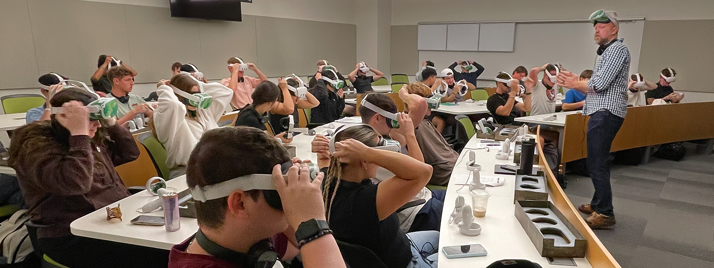
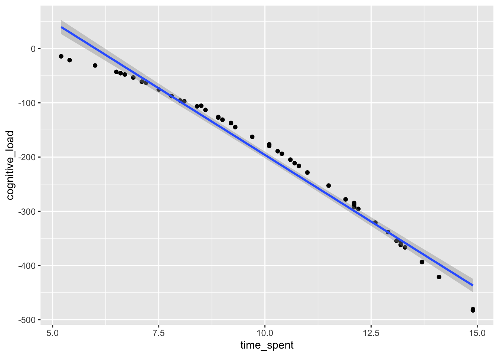
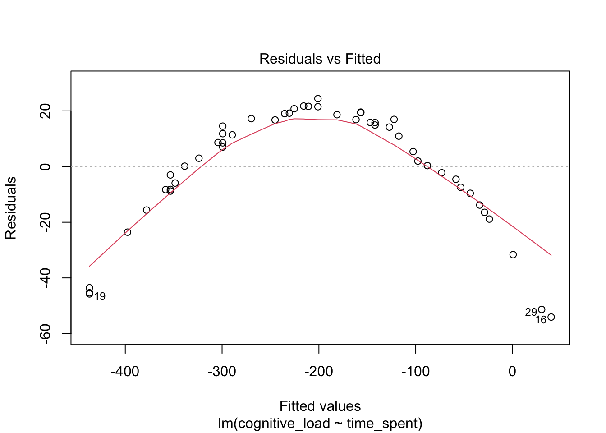
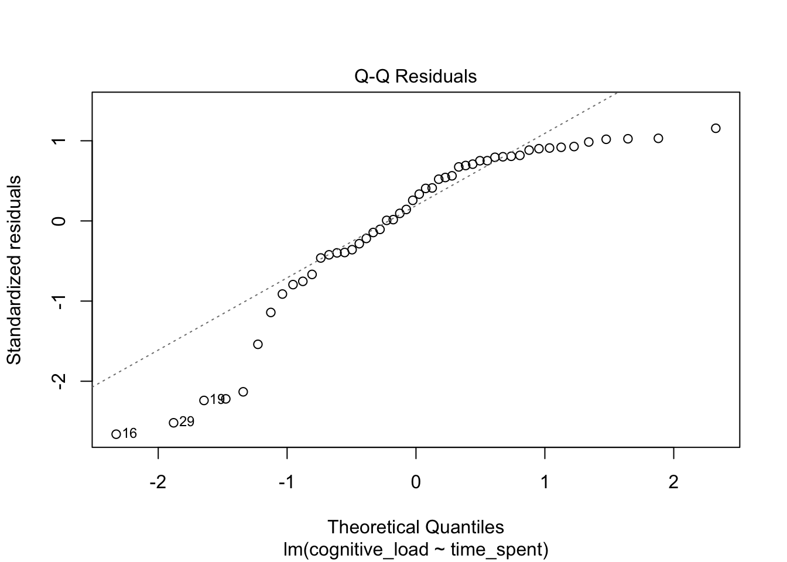
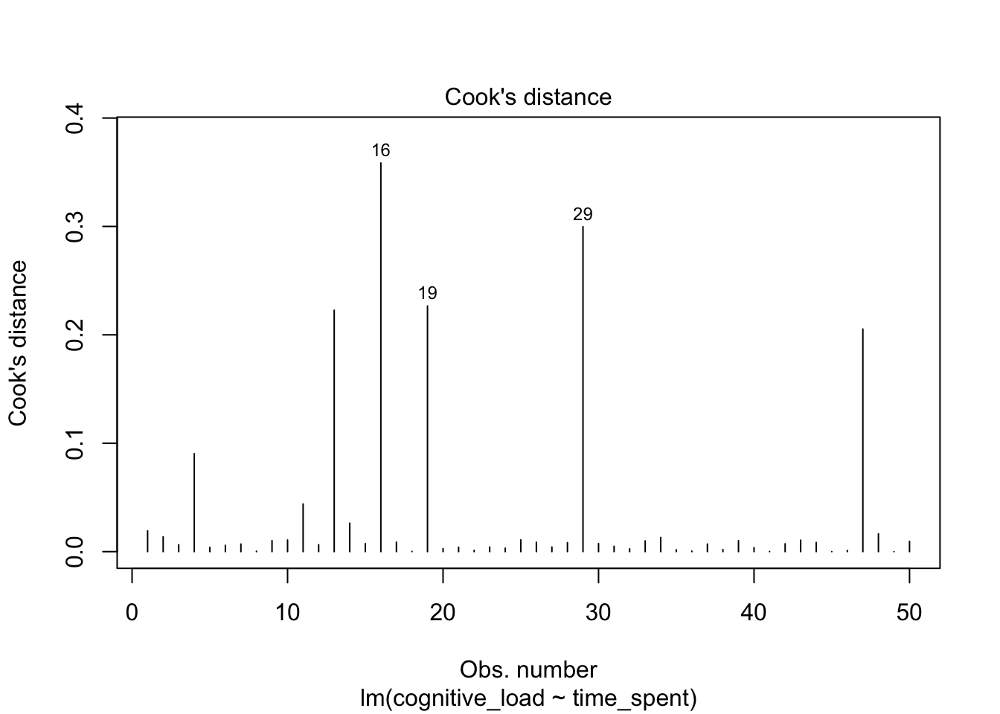
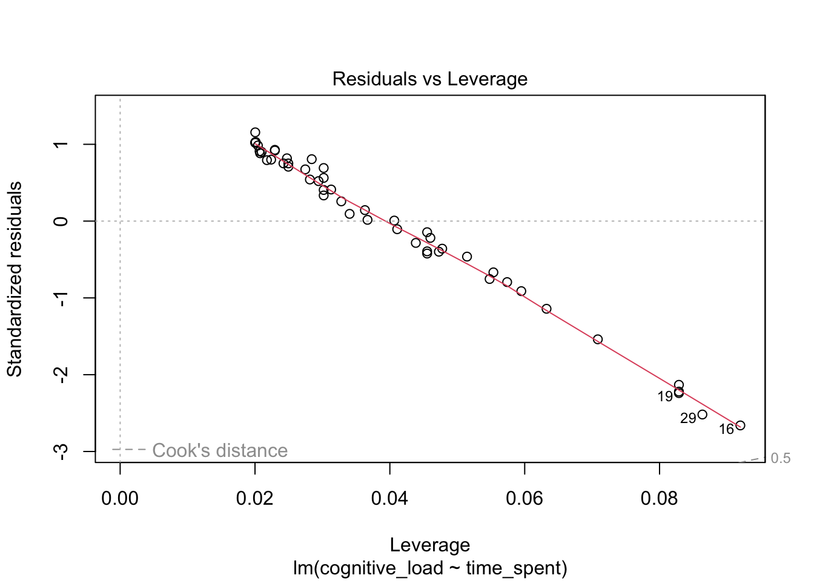
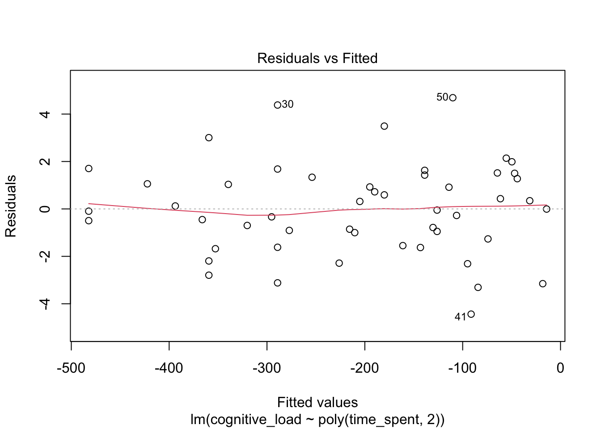
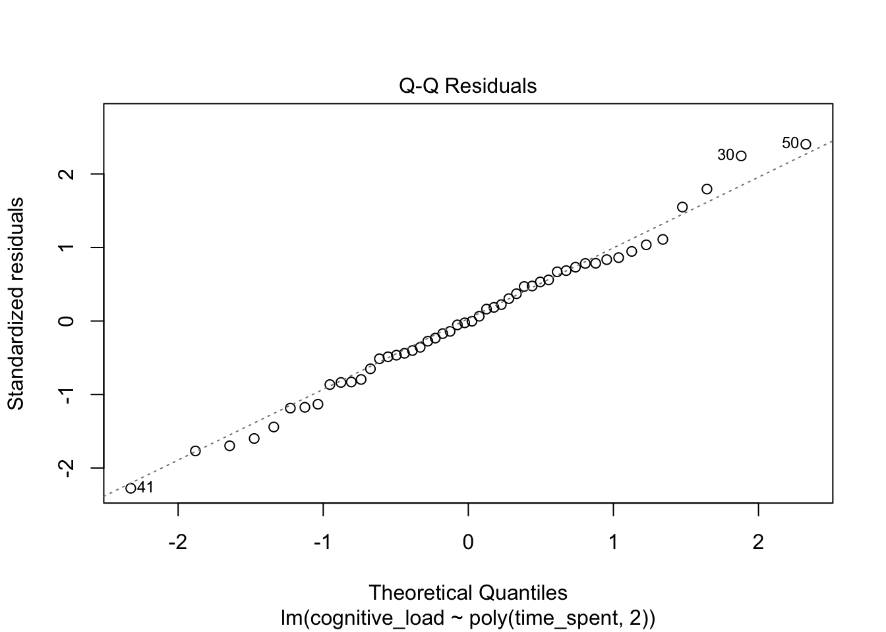
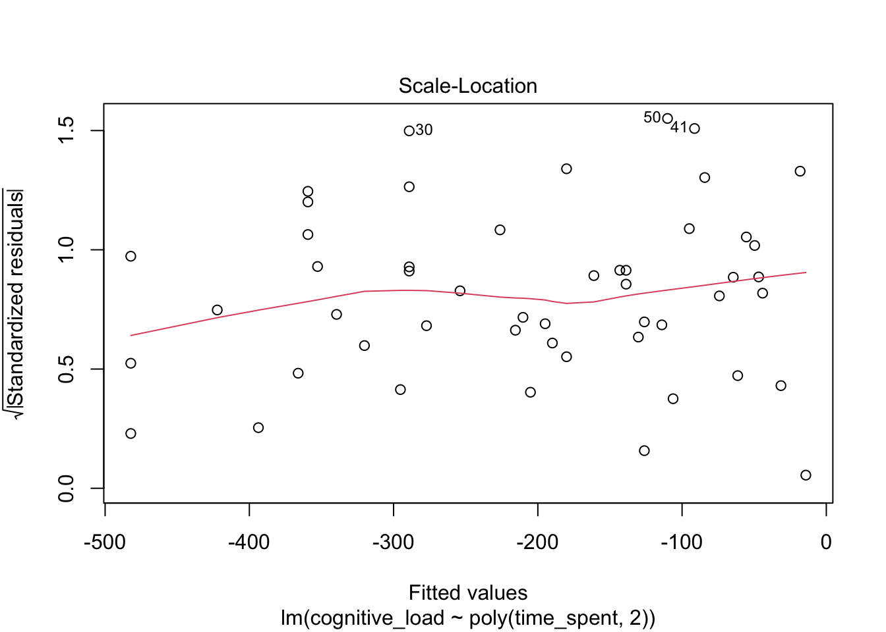
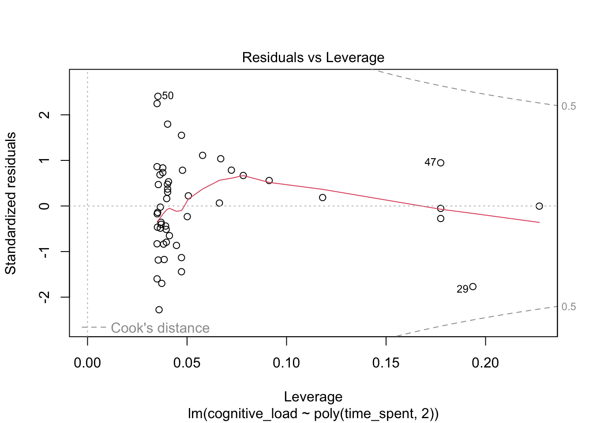

library(ggplot2) #use this package to create venn diagram
library(grid) #use this package to create venn diagram
library(dplyr) #use this package with ggplot to create graphs and summarize data
library(MASS) #use this package for creating multivariate normal distributions of variables
library(readr) #use this package for reading in the data that had a csv extension
library(psych) #use this package for describe function one of my favorites for descriptive statistics.
library(patchwork) #use this package to print images side by side using a + symbol - so handy!
library(MissMech) #use this package to run a Hawkin's test for MCAR, where normality is not assumed"
library(naniar) #use this package to identify and visualization missing data
library(mice) #use this package to create imputed data sets
library(tidyverse) #use this package for cleaning data, using pipes %>%, so many packages and functions in one library <3
library(rstatix) #use this package to run boxplots and identify outliersPolynomial Regression
Overview
In this module, we will review the polynomial regression model using simulated data inspired by a study on immersive virtual reality-based learning by Huang et al. (2020). We will explore the curvilinear relationship between the time spent in the virtual learning environment and cognitive load when using modern technical teaching techniques.Futhermore, I will show you a couple of disagnostic tools for identifying outliers using Cook’s distance and leverage.

# PackagesDefine Polynomial Regression
Goal: Polynomial regression models are used to investigate the relationship between a dependent variable, also referred to as a response variable, with an explanatory variable that has been taken to some exponential power.
- Polynomial regression is a certain type of multiple linear regression, and an extension of regression.
- Unlike multiple regression, polynomial regression includes one explanatory that has been taken to some degree of power.
- The polynomial regression model consist of successive power terms. Each model will include the highest order term plus all lower order terms (significant or not)(Ostertagová 2012) .
Linear:
\[ Y_{\text{cognitive\_load}} = \beta_0 + \beta_1 X_{\text{time\_spent}} \]
Quadratic:
\[ Y_{\text{cognitive\_load}} = \beta_0 + \beta_1 X_{\text{time\_spent}} + \beta_2 X_{\text{time\_spent}}^2 \]
Cubic:
\[ Y_{\text{cognitive\_load}} = \beta_0 + \beta_1 X_{\text{time\_spent}} + \beta_2 X_{\text{time\_spent}}^2 + \beta_3 X_{\text{time\_spent}}^3 \] Why or when should we use polynomial regression?
When after modeling a regression model and identifying a curvelinear relationship between the response and explanatory variables.
Despite adding exponential terms the model remains a linear regression model because the coefficients are linear.
Hypotheses
HO: \(\beta_2=\beta_3= 0\); There is no difference between modeling a linear trend and a quadratic trend. The linear trend in time spent in a virtual reality course is no different from its quadratic trend.
HA: \(beta_2\ne\beta_3\); There is a difference between modeling a linear trend and a quadratic trend. The quadratic term better models the trend in time spent in virtual reality than the linear term.
Techniques for Employing a Polynomial Regression
Forward procedure: Add a degree term one at a time until a significant term is found. Caveat: this approach may fail to find the best exponential degree term because it stops a researcher from modeling other exponential terms.
Backward procedure: Start with the high degree term and remove one term at a time until a significant term is found. Problem: Researchers may struggle with determining the best starting point. (Seber and Lee 2003) recommends not exceeding 6 degrees, as the model may not be estimable.
General problems with Polynomial Regession
Forward and backward procedures may not lead to modeling the same trend.
Researchers may find the terms difficult to interpret or confusing.
Analytical Steps
- Run a linear regression.
- Determine if assumptions of linear regression hold
- Linearity: The linearity assumption assumes that the relationship between the dependent variable (Y) and independent variable(s) (X) is linear. To check this assumption, you can create scatterplots and evaluate the linearity of the data.
- Independence of Residuals: The independence of residuals assumes that the errors (residuals) are not correlated with each other. Check independence assumption by examining a plot of residuals against the order of observations.
- Homoscedasticity: Homoscedasticity suggests that the variance of residuals is constant across all levels of the independent variable. In other words, the spread of residuals should be roughly the same for all values of X. Check this assumption by creating a plot of residuals against the fitted values.
- Normality of Residuals: The normality of the residuals assumption assumes that the residuals follow a normal distribution. A Q-Q plot and normality tests like the Shapiro-Wilk test can help assess this assumption.
- Determine if assumptions of linear regression hold
- Identified a non-linear trend from assumption checking.
- Decide whether to use a backward or forward procedure.
- Run the polynomial regression and determine the best trend.
Example Polynomial Regression
Read in the in the data
# Read in the data using the read_csv
immersivedata <- read_csv("immersivedata.csv")Run a linear regression
#Use the lm function in R to run a linear regression
modellm <- lm(cognitive_load~ time_spent, data = immersivedata)
#print the coefficients by typing model label
modellm
Call:
lm(formula = cognitive_load ~ time_spent, data = immersivedata)
Coefficients:
(Intercept) time_spent
295.49 -49.16 #use the summary function to get model fit information
summary(modellm)
Call:
lm(formula = cognitive_load ~ time_spent, data = immersivedata)
Residuals:
Min 1Q Median 3Q Max
-54.068 -8.679 6.204 16.845 24.404
Coefficients:
Estimate Std. Error t value Pr(>|t|)
(Intercept) 295.486 12.040 24.54 <2e-16 ***
time_spent -49.157 1.141 -43.08 <2e-16 ***
---
Signif. codes: 0 '***' 0.001 '**' 0.01 '*' 0.05 '.' 0.1 ' ' 1
Residual standard error: 21.33 on 48 degrees of freedom
Multiple R-squared: 0.9748, Adjusted R-squared: 0.9743
F-statistic: 1856 on 1 and 48 DF, p-value: < 2.2e-16Create scatterplots to determine if you have met assumptions and to determine if the data is linear
immersivedata %>%
ggplot(aes(x = time_spent, y = cognitive_load)) + geom_point() + geom_smooth(method = "lm")`geom_smooth()` using formula = 'y ~ x'
The data appear to curve away from a linear model trend. This suggests we may need to use a polynomial regression model
Plots to evaluate the regression
Residuals-versus-fitted-values plot
- In the following graph we plot model residuals against the fitted values.
- The x-axis represents the fitted or predicted values of cognitive load and the y-axis contains residual values.
- In this graph we want all the values to be scattered randomly around 0, suggesting that there is no pattern between the fitted and residuals.
#plot(modellm)
A visual inspection of the residuals-versus-fitted-values plot suggests that we have not met the assumptions of linearity or homoscedasticity. The violation of homoscedasticity means that the variance of residuals is not constant across all levels of the independent variable. The observed pattern suggests we may need to use polynomial regression.
QQ-plot * The QQ-plot helps determine whether residuals are normally distributed an important assumption of regression.
The residuals’ observed percentiles on the y-axis against expected theoretical values on the x-axis.
Points should form a straight diagonal line if the data is normal.

A visual inspection of the QQ plot suggests that we have not met the assumptions of normality, because residuals deviate from the diagonal line.
Outlier Plots
Two plots can help evaluate if observations or cases are considered outliers, Cook’s distance and residuals-versus-leverage plots.
Cook’s Distance is a diagnostic tool for determining whether an observation is disproportionately influencing the results relative to other observations. We can plot each case’s Cook’s Distance value against the others.
Leverage is a tool that helps determine whether an observation or case’s explanatory value is far from that of all other cases. The greater the distance, the greater the potential that the case is influencing the model.
The Cook’s Distance plot can be used to identify cases that may be considered influential. Cook’s values are represented on the y-axis, and cases are listed on the x-axis.
The residual-versus-leverage plot contains leverage values on the x-axis and standardized residuals on the y-axis. Points should be scattered around 0 with no pattern. Points farther to the right in the plot suggest that the standardized residuals have higher leverage. Residuals above or below 0 suggest that the residuals are large. The Residuals that fall beyond the Cook’s distance, as suggested, may be influential.

A visual inspection of Cook’s distance values suggest that cases 16, 19, and 29 may be influential.

A visual inspection of the residual-versus-leverage suggest that cases 16, 19, and 29 may be extreme values and pass the Cook’s distance threshold on the plot.
Run a Polynomial Regression
- Use the lm model because we still want our Beta coefficients to be modeled linearly.
- Use poly function to specify the degree we want to apply to students’ time spent in the virtual reality course.
- I decided to us the “backward method” starting with a higher term greater than 2 because the plot suggests that a quadratic or a degree of two may be best.
model_3 <- lm(cognitive_load ~ poly(time_spent, 3), data = immersivedata)
summary(model_3)
Call:
lm(formula = cognitive_load ~ poly(time_spent, 3), data = immersivedata)
Residuals:
Min 1Q Median 3Q Max
-4.6267 -1.3450 0.0155 1.2969 4.5720
Coefficients:
Estimate Std. Error t value Pr(>|t|)
(Intercept) -206.6080 0.2825 -731.320 <2e-16 ***
poly(time_spent, 3)1 -918.6533 1.9977 -459.861 <2e-16 ***
poly(time_spent, 3)2 -147.1211 1.9977 -73.646 <2e-16 ***
poly(time_spent, 3)3 1.3119 1.9977 0.657 0.515
---
Signif. codes: 0 '***' 0.001 '**' 0.01 '*' 0.05 '.' 0.1 ' ' 1
Residual standard error: 1.998 on 46 degrees of freedom
Multiple R-squared: 0.9998, Adjusted R-squared: 0.9998
F-statistic: 7.23e+04 on 3 and 46 DF, p-value: < 2.2e-16The cubic model suggests that time spent modeled using a cubic function does not significantly predict cognitive load.
model_2 <- lm(cognitive_load ~ poly(time_spent, 2), data = immersivedata)
summary(model_2)
Call:
lm(formula = cognitive_load ~ poly(time_spent, 2), data = immersivedata)
Residuals:
Min 1Q Median 3Q Max
-4.4370 -1.1988 -0.0269 1.3212 4.6903
Coefficients:
Estimate Std. Error t value Pr(>|t|)
(Intercept) -206.6080 0.2808 -735.8 <2e-16 ***
poly(time_spent, 2)1 -918.6533 1.9856 -462.7 <2e-16 ***
poly(time_spent, 2)2 -147.1211 1.9856 -74.1 <2e-16 ***
---
Signif. codes: 0 '***' 0.001 '**' 0.01 '*' 0.05 '.' 0.1 ' ' 1
Residual standard error: 1.986 on 47 degrees of freedom
Multiple R-squared: 0.9998, Adjusted R-squared: 0.9998
F-statistic: 1.098e+05 on 2 and 47 DF, p-value: < 2.2e-16The quadratic model suggests that time spent modeled using a quadratic function, or to the second degree term, significantly predicts cognitive load.
Check model fit again
plot(model_2)



Interpret
Interpret the model as a whole.
Time spent in a virtual reality course squared is a significant predictor in the quadratic model (\(p < .05\)) with an \(F =109800 (\text{df} = 2, 47), p < .05\). Approximately, 99.9% of the variation in the cognitive load is explained by taking into account a quadratic function of the time spent in virtual reality course.
References
Huang, Chiao Ling, Yi Fang Luo, Shu Ching Yang, Chia Mei Lu, and An-Sing Chen. 2020. “Influence of Students’ Learning Style, Sense of Presence, and Cognitive Load on Learning Outcomes in an Immersive Virtual Reality Learning Environment.” Journal of Educational Computing Research 58 (3): 596–615. https://doi.org/10.1177/0735633119867422.
Ostertagová, Eva. 2012. “Modelling Using Polynomial Regression.” Procedia Engineering 48: 500–506. https://doi.org/10.1016/j.proeng.2012.09.545.
Seber, George A. F., and Alan J. Lee. 2003. Linear Regression Analysis. 1st ed. Wiley Series in Probability and Statistics. Wiley. https://doi.org/10.1002/9780471722199.